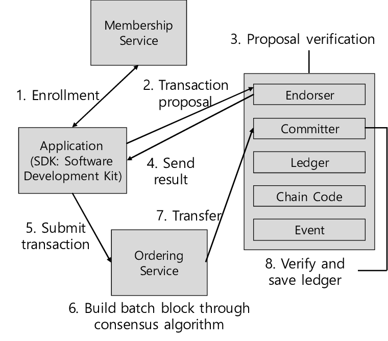

<!doctype html>
<html lang="en">
  <head>
    <meta charset="utf-8">

    <title>Fundamentals of Backend and Blockchain Development</title>

    <meta name="author" content="Dhruvin Parikh">

    <meta name="apple-mobile-web-app-capable" content="yes" />
    <meta name="apple-mobile-web-app-status-bar-style" content="black-translucent" />

    <meta name="viewport" content="width=device-width, initial-scale=1.0, maximum-scale=1.0, user-scalable=no, minimal-ui">

    <link rel="stylesheet" href="../../reveal.js/css/reveal.css">
    <link rel="stylesheet" href="../../reveal.js/css/theme/black.css" id="theme">

    <!-- Code syntax highlighting -->
    <link rel="stylesheet" href="../../reveal.js/lib/css/zenburn.css">

    <!-- Printing and PDF exports -->
    <script>
      var link = document.createElement( 'link' );
      link.rel = 'stylesheet';
      link.type = 'text/css';
      link.href = window.location.search.match( /print-pdf/gi ) ? '../../reveal.js/css/print/pdf.css' : '../../reveal.js/css/print/paper.css';
      document.getElementsByTagName( 'head' )[0].appendChild( link );
    </script>

    <!--[if lt IE 9]>
    <script src="../reveal.js/lib/js/html5shiv.js"></script>
    <![endif]-->

    <style>
      .reveal .slides h1, .reveal .slides h2, .reveal .slides h3 {
        text-transform: none;
      }

      .two-column {
        display: flex;
        flex-wrap: wrap;
      }

      .two-column em {
        margin: 20px;
      }

      .reveal .big-and-bold {
        font-weight: bold;
        font-size: 135%;
      }

      .reveal .shrunk-a-bit {
        font-size: 90%;
      }

      .reveal .shrunk-a-bit pre {
        width: 100%;
      }

      .reveal pre {
        width: 100%;
      }

      .reveal .highlight {
        color: yellow;
        font-weight: bold;
      }

      .reveal .highlightRed {
        color: red;
        font-weight: bold;
      }
    </style>
  </head>

  <body>
    <div class="reveal">
      <div class="slides">

<!------------------------------------------------------->


<section data-markdown><script type="text/template">

## CSBC 1000 - Fundamentals of Backend and Blockchain Development

### Class 11: Architecture Analysis : Hyperledger fabric

*Dhruvin Parikh*

</script></section>


<section data-markdown><script type="text/template">

## Class Plan
* Introduction to Hyperledger fabric
* HLF architecture
* Key design features
* Use cases
</script></section>


<section data-markdown><script type="text/template">
## Revision questions
* What conditions should be fulfilled for a network to be called a blockchain?
* Would a failed transaction record persist on blockchain?
* What changes will be applied to state state by a failed transaction?
</script></section>

<section data-markdown><script type="text/template">

## Blockchain

* an immutable transaction ledger, 
* Distributed network of peer nodes. 
* Redundant data 
* Data is of validated transactions by a consensus protocol
* Data is grouped into blocks 
* Block is bind to previous block via blockhash
</script></section>

<section data-markdown><script type="text/template">

## Public permissionless blockchains

* Public networks
* Open to anyone, 
* Participants interact anonymously
  * Bitcoin
    * UTXO model
  * Ethereum
    * Account model
    * Smart contract
</script></section>

<section data-markdown><script type="text/template">

## Limitation of public permissionless technologies

* Identity of participant
  * KYC and AML regulations
* Low transaction throughput
* High transaction confirmation latency
* Privacy and confidentiality of transactions
</script></section>

<section data-markdown><script type="text/template">

## Enter Hyperledger Fabric

* Open source 
* Enterprise-grade 
* Permissioned DLT platform
* Established under linux foundation
* Received contributions from IBM
* Modular architecture - plug-n-play components such as consensus,membership services, chaincode
* Unique consensus model to perform at scale
</script></section>

<section data-markdown><script type="text/template">

## HLF Concepts
* **Distributed Ledger** : asset tracking
* **Transactions** : State management, business logic in chaincode
* **Chaincode** : implement business logic to expose functions
</script></section>

<section data-markdown><script type="text/template">

## HLF Architecture

</script></section>

<section data-markdown><script type="text/template">

## Peers

* maintains ledger and state
* Commit transactions
* May hold smart contract (chain code)
* Access points for applications
* Simulate the transaction then endorse
* Enables data propagation 

</script></section>

<section data-markdown><script type="text/template">

## Endorsing Peers

* Specialised peer also endorses transaction by receiving a transaction proposal and responds by granting or denying endorsement.
* Must hold smart contract

</script></section>

<section data-markdown><script type="text/template">

## Ordering Node

* Approves the inclusion of transaction blocks into the ledger and communicates with committing and endorsing peer nodes.
* Does not hold smart contract.
* Does not hold ledger

</script></section>

<section data-markdown><script type="text/template">

## Ordering service
  * Special nodes who only have onus to order transactions in ledger
  * Unlike Bitcoin/Ethereum where all nodes guarantee consensus
  * Ensure transaction ordering is deterministic ; not probabilistic
  * Orderer nodes at deployed at organizational level
</script></section>

<section data-markdown><script type="text/template">

## Channels
  * Similar to hotline for privacy concerns
  * Each channel has its own blockchain
  * **System channel** : owned by orderer's organization. 
    * Other orgs are members of this channel.
    * contains definitions of all consortiums on the network and policies for endorsements, channels and chaincodes.
  * **Application channel** : owner by any organization for handling business use cases 

</script></section>

<section data-markdown><script type="text/template">

## Chaincode
  * Smart contracts running in a containerized environment e.g. Docker™. 
  * Containerized environment keeps them isolated 
  * Only a peer can interact with a chaincode.

</script></section>

<section data-markdown><script type="text/template">

## Chaincode methods
  * Init
  * Invoke
  * Query

</script></section>

<section data-markdown><script type="text/template">

## Chaincode life cycle
  * Package
  * Deploy
  * Approve
  * Commit

</script></section>

<section data-markdown><script type="text/template">

## Fabric certificate authorities
 * Trust enabler for requests to network
 * Same as browser can trust a website if has CA (*https*)
 * Participating organization may bring there own CA 

</script></section>


<section data-markdown><script type="text/template">

## Transaction flow

* Address resiliency, flexibility, scalability, performance and confidentiality through following steps :
  * Execute
  * Order
  * Validate
</script></section>

<section data-markdown><script type="text/template">

## Execute-Order-Validate Architecture

* transactions are simulated and validated by the peers
* transactions are validated against a predefined policies before committing them to the ledger of a channel
* Ethereum and bitcoin
  * order → execute → update state

</script></section>

<section data-markdown><script type="text/template">

## Detailed transaction flow


</script></section>

<section data-markdown><script type="text/template">

## Transaction flow steps

1. Propose transaction
2. Execute proposal
3. Proposal Response
4. Order transaction (SOLO - dev only, Raft)
5. Deliver transaction
6. Validate transaction 
7. Notify transaction

</script></section>

<section data-markdown><script type="text/template">

## Propose transaction 


</script></section>

<section data-markdown><script type="text/template">

## Execute proposal 


</script></section>

<section data-markdown><script type="text/template">

## Proposal response


</script></section>

<section data-markdown><script type="text/template">

## Order transaction


</script></section>

<section data-markdown><script type="text/template">

## Deliver transaction


</script></section>

<section data-markdown><script type="text/template">

## Validate transaction


</script></section>

<section data-markdown><script type="text/template">

## HLF network deployment


</script></section>

<section data-markdown><script type="text/template">

## Salient features of HLF

* Modular and configurable architecture
* Versatility and optimization for use cases
* Permissioned
</script></section>

<section data-markdown><script type="text/template">

## Modular components

* Ordering service
* Member service provider
* Peer-to-peer gossip service
* Smart contracts ("chaincode")
* Configurable DBMSs
* Enforcement and policy enforcement
</script></section>

<section data-markdown><script type="text/template">

## Chaincode

* Installing chaincode
 * Operator decides which on which peer chaincode will be installed
 * A peer accessed by a client application must have chaincode installed.
 * The packaged chaincode is sent to the peers, extracted and stored in a predefined directory on the containers where the Fabric peer software is running.
</script></section>

<section data-markdown><script type="text/template">

* Chaincode instantiation
  * Client or operator will convert the chaincode project into an executable binary which is containerized. 
  * Channel is notified of chaincode after instantiation. 
  * Only one peer can instantiate a chaincode as chaincodes have their own state 
  * State is separate from the channel’s ledger.
  * divergence of states if there are more than once copy of chaincode
  * r/w to state of chaincode are transactions.
</script></section>


<section data-markdown><script type="text/template">

* Chaincode upgrade
  * The new chaincode will be repackaged with a new version, installed and instantiated.
  * Simple compared upgrading ethereum smart contracts
   * *How ethereum smart contracts are made upgradeable?*
</script></section>

<section data-markdown><script type="text/template">

## Ethereum vs HLF

* HLF is a framework - Ethereum is platform
* HLF has pluggable consensus
* HLF does not have native currency
* HLF Smart contract written in Golang, Java, Node.js
* HLF transactions can be made private, confidential and identifiable
</script></section>


<section data-markdown><script type="text/template">

## Scaling through block configuration

```
! configtx.yaml
	Order: &OrderDefaults

		OrdererType: solo
		Addresses:
		   -orderer.example.com:7050
		BatchTimeout: 2s
		BatchSize:
		   MaxMessageCount: 10
		   AbsoluteMaxBytes: 99MB
		   PreferredMaxBytes: 512 KB

		Kafka:
		   Brokers:
		     -127.0.0.1:9092
```

</script></section>

<section data-markdown><script type="text/template">

* BatchTimeout
 * the amount of time to wait before creating the next batch of transactions (block).
* BatchSize 
 * controls the number of messages in a block
* MaxMessageCount
 * maximum number of transactions to add in a batch.
</script></section>

<section data-markdown><script type="text/template">

* AbsoluteMaxBytes
  * maximum size of a message in the batch. This number can’t be exceeded.
* PreferredMaxBytes 
  * this is what the operator prefers the max size of a batch to be and the network will check this first.
</script></section>

<section data-markdown><script type="text/template">

## HLF model

* Assets
* Chaincode
* Ledger features
* Privacy
* Security and Membership services
* Consensus
</script></section>


<section data-markdown><script type="text/template">
## Fabric ledger features to scale

* Requires endorsements from fewer peers across fewer organizations to allow fast transaction confirmations.
* Private Data Collections
 * Horizontal (more machines) and vertical(more memory) scaling
 * Each peer is allowed to create chaincode accessible private database; decided by peers for the access rights

</script></section>

  
<section data-markdown><script type="text/template">

## Hyperledger Projects

* Sawtooth
* IROHA
* Fabric
* BURROW
* INDY
</script></section>

<section data-markdown><script type="text/template">

## Hyperledger Tools

* CALIPER
* CELLO
* COMPOSER
* EXPLORER
* QUILT
* URSA
</script></section>

<section data-markdown><script type="text/template">

## HLF use cases

* Aerospace
 * create provenance of aeroplan parts for trading 
* Energy
 * Trade excess energy generated by renewable energy providers
 * power companies, community boards, solar panel vendors and electric vehicle battery charger manufacturers.
</script></section>

<section data-markdown><script type="text/template">

* Food and clothing provenance
  * Visibility of supply chain to end consumer
</script></section>

<section data-markdown><script type="text/template">

## Supply chain w/o Blockchain


</script></section>

<section data-markdown><script type="text/template">

## Supply chain w/ Blockchain


</script></section>

<section data-markdown><script type="text/template">

## Assessment

* Module 11 : Architecture Analysis - Hyperledger Fabric Quiz 
    
</script></section>

<section data-markdown><script type="text/template">

## Reading

* [transaction flow](https://hyperledger-fabric.readthedocs.io/en/latest/txflow.html) 
* [HLF performance](https://www.ibm.com/blogs/blockchain/2019/04/does-hyperledger-fabric-perform-at-scale/)
* [Writing chaincode in HLF](https://www.youtube.com/live/3ZcQfvRfTSE?si=Od43DjxqqTViPCSa)    
</script></section>


<section data-markdown><script type="text/template">

## End of Class

</script></section>


<!------------------------------------------------------->


      </div>

    </div>

    <script src="../../reveal.js/lib/js/head.min.js"></script>
    <script src="../../reveal.js/js/reveal.js"></script>
    <script src="../../reveal.js/plugin/zoom-js/zoom.js"></script>

    <script>

      // Full list of configuration options available at:
      // https://github.com/hakimel/reveal.js#configuration
      Reveal.initialize({
        controls: true,
        progress: true,
        history: true,
        center: true,

        transition: 'none', // none/fade/slide/convex/concave/zoom

	math: {
          mathjax: '../lib/MathJax/MathJax.js',
          config: 'TeX-AMS_SVG-full',
	},

        // Optional reveal.js plugins
        dependencies: [
          { src: '../../reveal.js/plugin/markdown/marked.js', condition: function() { return !!document.querySelector( '[data-markdown]' ); } },
          { src: '../../reveal.js/plugin/markdown/markdown.js', condition: function() { return !!document.querySelector( '[data-markdown]' ); } },
          { src: '../../reveal.js/plugin/highlight/highlight.js', async: true, callback: function() { hljs.initHighlightingOnLoad(); } },
          { src: '../../reveal.js/plugin/math/math.js', async: true }
        ]
      });

    </script>

  </body>
</html>